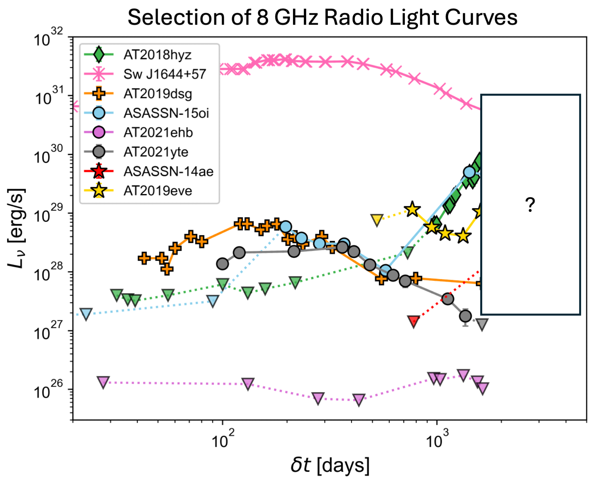
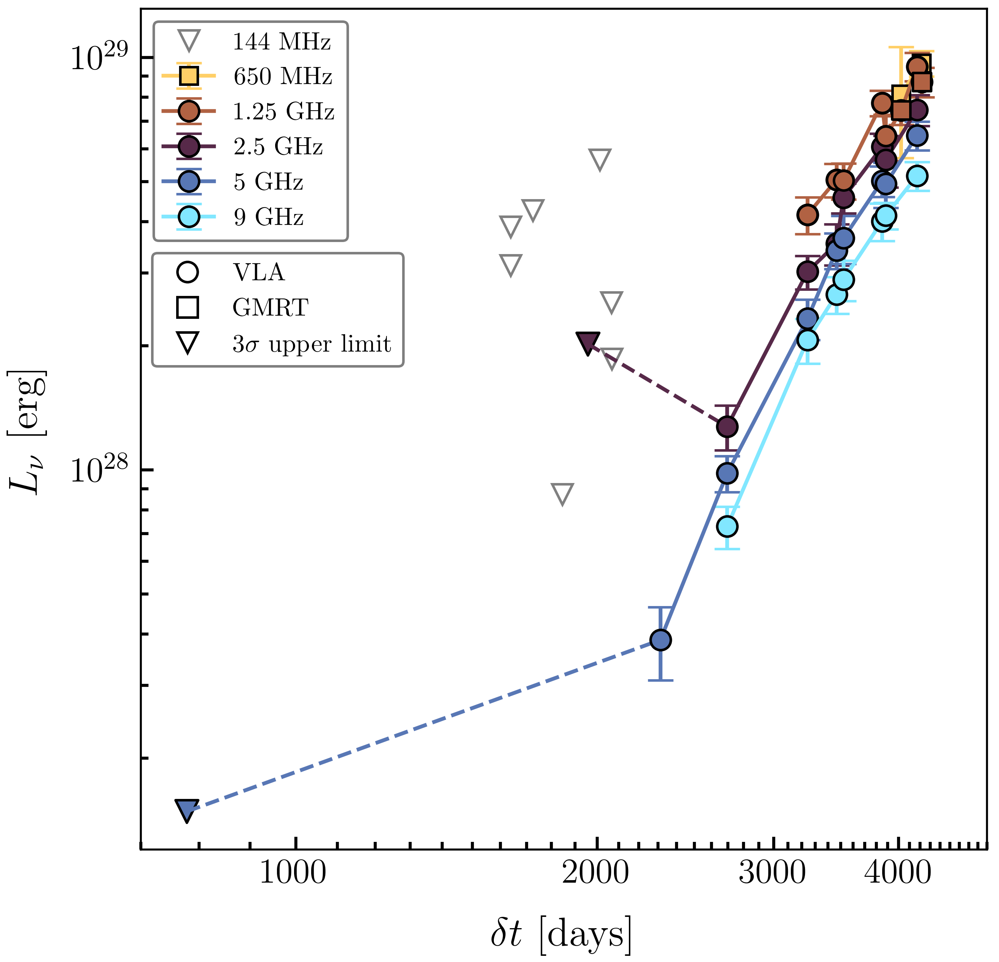

Research
I am interested in the radio emission from energetic transients, primarily tidal disruption events (TDEs). TDEs occur when a passing star wanders too close to a supermassive black hole and is suddenly shredded by the intense gravitational field. Radio observations of TDEs track the outflows/jets launched during this process and are therefore excellent probes of the energetics and environments of TDEs.
See below for more details on my projects.

[In Prep] Statistics of Late-Time Radio Emission from TDEs
Cendes+24 discovered that roughly 40% of optically discovered TDEs exhibit a delayed onset of radio emission on timescales of ~years after optical discovery, suggesting the presence of late-time outflows, off-axis jets, and/or other mechanisms. In this project, I am expanding the observations presented in Cendes+24 by over three years and for 10+ new TDEs, more than doubling our sample size. I will analyze the radio light curves to search for common rise indices, timescales, and luminosities that are revealed by our increased statistical power. I will also utilize the statistics of our sampling to infer the distribution of onset times for radio flares. This work will help determine if common emission mechanisms exist and, if so, when the emission is expected to occur.

[Submitted] A Decade-Delayed Radio Flare from TDE ASASSN-14ae
In this project, I analyzed new late-time radio observations of the TDE ASASSN-14ae, which exhibited the latest (>6.5 years) onset of delayed radio emission post-TDE in our sample. Since the discovery of radio emission, its flux has been rapidly rising at all frequencies and continues to brighten over 12 years post-TDE! I analyzed this TDE in the context of two possible emission mechanisms: (i) a delayed non-relativistic outflow launched several years post-optical discovery and (ii) a highly off-axis relativistic jet. I found that the flat radio spectral energy distribution, a coincident X-ray flare, and the non-relativistic outflow energetics provide compelling evidence that this flare originates in a compact jet launched by a state transition in the accretion flow. This result suggests that the emission mechanism of such a jet much be able to occur as late as 5+ years post-TDE, the latest inferred timescale to date.